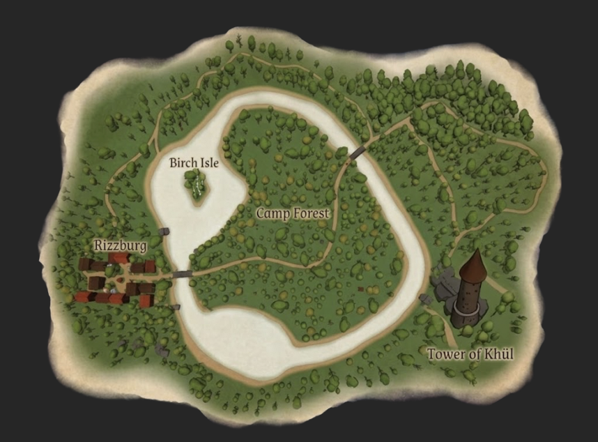
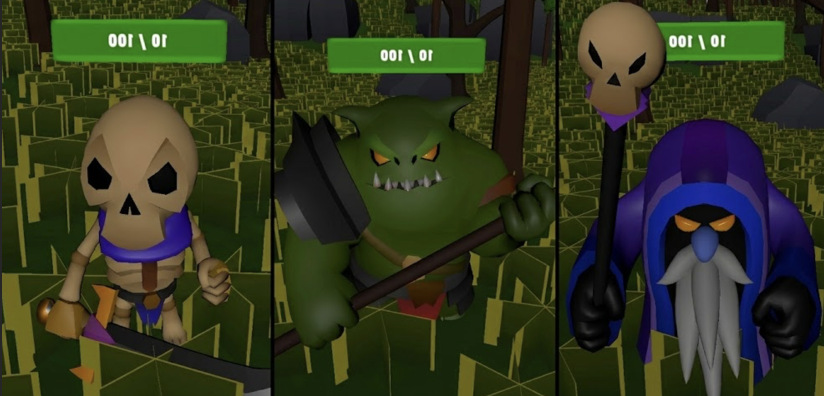
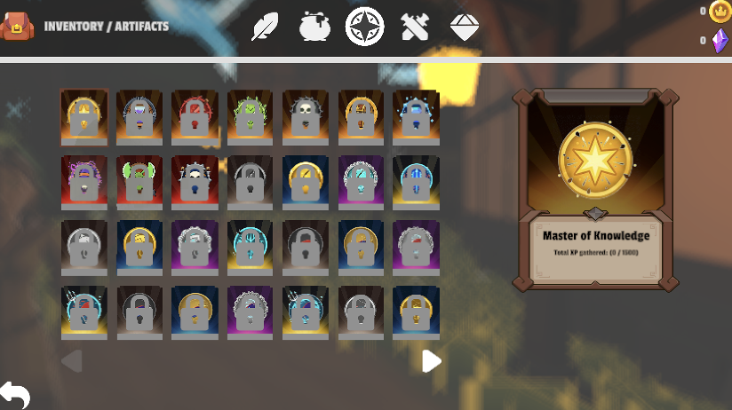
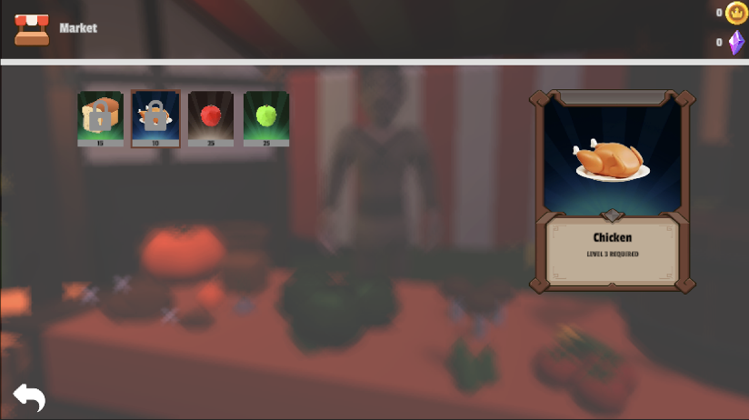

Aëternis
About The Game
Aëternis is a first-person low-poly fantasy Action RPG built in Unity. As a traveler arriving in the village of Rizzburg, you are tasked with uncovering dark secrets threatening the island—from the deep woods of Camp Forest and Birch Isle to the dungeons of the Tower of Khül.
Interact with voiced villagers like Lis, Aldric, and Boric, gear up at local shops, catch fish by the lake, piece together four ancient book riddles to dig up buried relics, and fight off skeletons, ogres, dark mages, and a summoned boss.
Gameplay & Systems Built
- Multi-Tab Inventory & Economy: Categorized inventory for Equipment, Food, Ingredients, and unlockable Artifacts/Achievements, plus level-gated shops (Market, Armory, Fish Shop) with Gold & Gem currencies.
- First-Person Combat & AI: Melee combat with axes and swords against skeletons, heavy ogres, dark mages, and a summoned boss encounter.
- Voiced NPC Dialogues & Quests: Interactive dialogue system with villagers, traders, and ritual storylines.
- Fishing & Treasure Hunting: Custom timing-bar fishing minigame and a 4-part book riddle questline with digging mechanics.
- Open Island & Dungeons: Seamless exploration across Rizzburg, Birch Isle, Camp Forest, and the Tower of Khül with an in-game world map.
Screenshots & Features

The Island of Rizzburg
In-game map featuring Rizzburg village, Birch Isle, Camp Forest, and the Tower of Khül.

Enemy Roster & Combat
Battle skeletal warriors, heavy hammer-wielding ogres, and dark magic casters.

Artifacts & Progression
Multi-category inventory with unlockable artifacts and progression milestones like Master of Knowledge.

Village Shops & Trading
Buy food, weapons, and fishing gear using gold and gems, with level-based item unlocks.